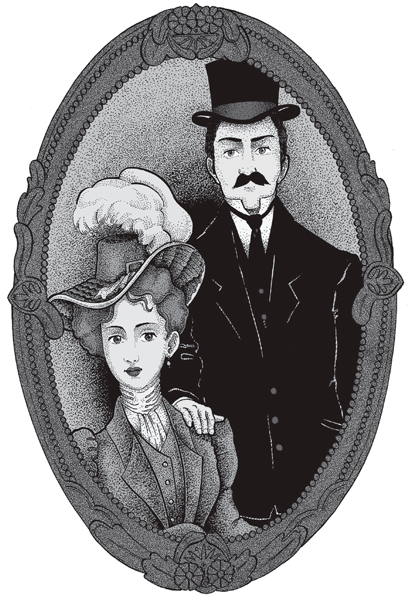
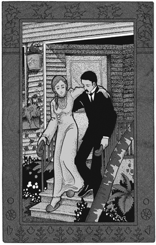
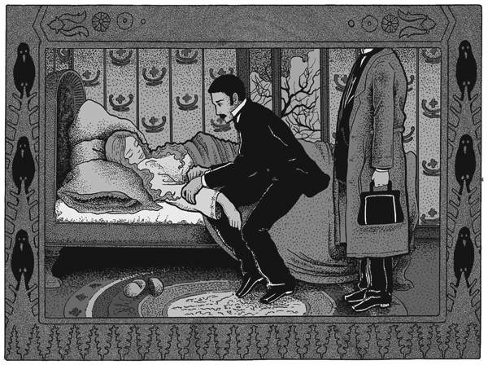
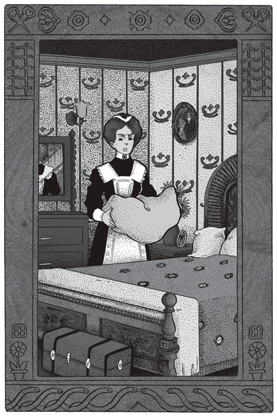
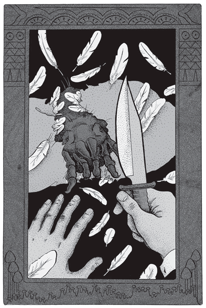

|
 |
|
El impasible semblante de su marido la contenía siempre. |
Su luna de miel fue un largo escalofrío. Rubia, angelical y tímida, el carácter duro de su marido heló sus soñadas niñerías de novia. Ella lo quería mucho, sin embargo, a veces, con un ligero estremecimiento cuando, volviendo de noche juntos por la calle, echaba una furtiva mirada a la alta estatura de Jordán, mudo desde hacía una hora. Él, por su parte, la amaba profundamente, sin darlo a conocer.
Durante tres meses –se habían casado en abril– vivieron una dicha especial.
Sin duda hubiera ella deseado menos severidad en ese rígido cielo de amor, más expansiva e incauta ternura; pero el impasible semblante de su marido la contenía siempre.
La casa en que vivían influía no poco en sus estremecimientos. La blancura del patio silencioso –frisos, columnas y estatuas de mármol– producía una otoñal impresión de palacio encantado. Dentro, el brillo glacial del estuco, sin el más leve rasguño en las altas paredes, afirmaba aquella sensación de desapacible frío. Al cruzar de una pieza a otra, los pasos hallaban eco en toda la casa, como si un largo abandono hubiera sensibilizado su resonancia.
En ese extraño nido de amor, Alicia pasó todo el otoño. No obstante había concluido por echar un velo sobre sus antiguos sueños, y aún vivía dormida en la casa hostil, sin querer pensar en nada hasta que llegaba su marido.
No es raro que adelgazara. Tuvo un ligero ataque de influenza que se arrastró insidiosamente días y días; Alicia no se reponía nunca. Al fin una tarde pudo salir al jardín apoyada en el brazo de su marido. Miraba indiferente a uno y otro lado. De pronto Jordán, con honda ternura, le pasó muy lento la mano por la cabeza, y Alicia rompió en seguida en sollozos echándole los brazos al cuello. Lloró largamente todo su espanto callado, redoblando el llanto a la menor tentativa de caricia. Luego los sollozos fueron retardándose, y aún quedó largo rato escondida en su cuello, sin moverse ni pronunciar una palabra.
Fue ese el último día en que Alicia estuvo levantada. Al día siguiente amaneció desvanecida. El médico de Jordán la examinó con suma atención, ordenándole cama y descanso absolutos.
–No sé –le dijo a Jordán en la puerta de calle con la voz todavía baja–. Tiene una gran debilidad que no me explico. Y sin vómitos, nada… Si mañana se despierta como hoy, llámeme en seguida.
 |
Tiene una gran debilidad que no me explico. |
Al otro día Alicia seguía peor. Hubo consulta. Constatose una anemia de marcha agudísima, completamente inexplicable. Alicia no tuvo más desmayos, pero se iba visiblemente a la muerte. Todo el día el dormitorio estaba con las luces prendidas y en pleno silencio. Pasábanse horas sin que se oyera el menor ruido. Alicia dormitaba. Jordán vivía en la sala, también con toda la luz encendida. Paseábase sin cesar de un extremo a otro, con incansable obstinación. La alfombra ahogaba sus pasos. A ratos entraba en el dormitorio y proseguía su mudo vaivén a lo largo de la cama, deteniéndose un instante en cada extremo a mirar a su mujer. Pronto Alicia comenzó a tener alucinaciones, confusas y flotantes al principio, y que descendieron luego a ras del suelo. La joven, con los ojos desmesuradamente abiertos, no hacía sino mirar la alfombra a uno y otro lado del respaldo de la cama. Una noche quedó de repente mirando fijamente. Al raro abrió la boca para gritar, y sus narices y labios se perlaron de sudor.
–¡Jordán! ¡Jordán! –exclamó, rígida de espanto, sin dejar de mirar la alfombra.
Jordán corrió al dormitorio, y al verlo aparecer Alicia lanzó un alarido de horror.
–¡Soy yo, Alicia, soy yo!
Alicia lo miró con extravío, miró la alfombra, volvió a mirarlo, y después de largo rato de estupefacta confrontación, se serenó. Sonrió y tomó entre las suyas la mano de su marido, acariciándola por media hora, temblando.
Entre sus alucinaciones más porfiadas, hubo un antropoide apoyado en la alfombra sobre los dedos, que tenía fijos en ella sus ojos.
Los médicos volvieron inútilmente. Había allí delante de ellos una vida que se acababa, desangrándose día a día, hora a hora, sin saber absolutamente cómo. En la última consulta Alicia yacía en estupor, mientras ellos pulsaban, pasándose de uno a otro la muñeca inerte. La observaron largo rato en silencio, y siguieron al comedor.
 |
Sonrió y tomó entre las suyas la mano de su marido. |
–Pst… –se encogió de hombros desalentado su médico–. Es un caso serio… Poco hay que hacer.
–¡Sólo eso me faltaba! –resopló Jordán y tamborileó bruscamente sobre la mesa.
Alicia fue extinguiéndose en su delirio de anemia, agravado de tarde, pero que remitía siempre en las primeras horas. Durante el día no avanzaba su enfermedad, pero cada mañana amanecía lívida, en síncope casi. Parecía que únicamente de noche se le fuera la vida en nuevas oleadas de sangre. Tenía siempre al despertar la sensación de estar desplomada en la cama con un millón de kilos encima. Desde el tercer día este hundimiento no la abandonó más. Apenas podía mover la cabeza. No quiso que le tocaran la cama, ni aun que le arreglaran el almohadón. Sus terrores crepusculares avanzaban ahora en forma de monstruos que se arrastraban hasta la cama, y trepaban dificultosamente por la colcha.
Perdió luego el conocimiento. Los dos días finales deliró sin cesar a media voz. Las luces continuaban fúnebremente encendidas en el dormitorio y la sala. En el silencio agónico de la casa, no se oía más que el delirio monótono que salía de la cama, y el sordo retumbo de los eternos pasos de Jordán.
Alicia murió, por fin. La sirvienta, cuando entró después a deshacer la cama, sola ya, miró un rato extrañada el almohadón.
–¡Señor! –llamó a Jordán en voz baja–. En el almohadón hay manchas que parecen de sangre.
Jordán se acercó rápidamente y se dobló sobre aquél. Efectivamente, sobre la funda, a ambos lados del hueco que había dejado la cabeza de Alicia, se veían manchitas oscuras.
–Parecen picaduras –murmuró la sirvienta después de un raro de inmóvil observación.
 |
Había un animal monstruoso, una bola viviente […] |
–Levántelo a la luz– le dijo Jordán.
La sirvienta lo levantó pero en seguida lo dejó caer y se quedó mirando a aquél, lívida y temblando. Sin saber por qué, Jordán sintió que los cabellos se le erizaban.
–¿Qué hay? –murmuró con voz ronca.
–Pesa mucho –articuló la sirvienta, sin dejar de temblar.
Jordán lo levantó; pesaba extraordinariamente. Salieron con él, y sobre la mesa del comedor Jordán cortó funda y envoltura de un tajo. Las plumas superiores volaron, y la sirvienta dio un grito de horror con toda la boca abierta, llevándose las manos crispadas a los bandós. Sobre el fondo, entre las plumas, moviendo lentamente las patas velludas, había un animal monstruoso, una bola viviente y viscosa. Estaba tan hinchado que apenas se le pronunciaba la boca.
 |
Jordán cortó funda y envoltura de un tajo. |
Noche a noche, desde que Alicia había caído en cama, había aplicado sigilosamente su boca –su trompa, mejor dicho– a las sienes de aquélla, chupándole la sangre. La picadura era casi imperceptible. La remoción diaria del almohadón sin duda había impedido al principio su desarrollo; pero desde que la joven no pudo moverse, la succión fue vertiginosa. En cinco días, en cinco noches, había vaciado a Alicia.
Estos parásitos de las aves, diminutos en el medio habitual, llegan a adquirir en ciertas condiciones proporciones enormes. La sangre humana parece serles particularmente favorable, y no es raro hallarlos en los almohadones de pluma.
Tomado de Cuentos de amor, locura y de muerte (1917)